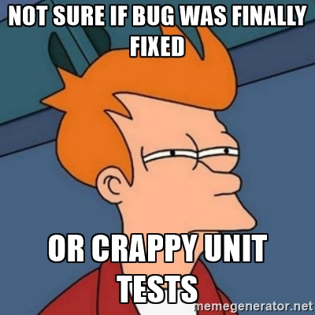

Programmer avec de super pouvoirs
Xavier Van de Woestyne - Octobre 2016
Bonjour !
- Développeur à Dernier Cri
- Programmation depuis 1999
- Travail de recherche (un peu particulier) qui n'avance pas
- Funkywork et RMEx
- @xvw sur Github et Medium, @vdwxv sur Twitter
- Outils: OCaml, Erlang, Elixir, F#, Ruby.
Dernier Cri
Une agence d'innovation numérique
- Web
- Conception de produits et logiciels
- Analyse et Machine-Learning
- Consultance
- Open-Source
- Ouvert à la communauté

Rejoignez-nous sur LilleFP !
Un Meetup dédié à la programmation fonctionnelle (en général).
Disclaimer

Objectifs
- Donner quelques éléments de vocabulaire
- Stimuler un intérêt pour d'autres méthodes (donc ne pas aller trop loin)
- Partager une opinion
- Ne pas endormir avec des exemples de code
- FAIRE DE LA PROMO :v
Topics
- Tests unitaires
- Analyse statique et compilation
- Systèmes de types
- Objectifs et définition
- Polymorphisme
- Systèmes de types algébriques
- Qu'est-ce que c'est que ça :v ?
- Designer par les types
- En 1999, à la NASA
- Le futur des langages et des pratiques
TDD et tests unitaires
La "bonne pratique" qui prévient les bogues
Test Driven Development,
dans le meilleur des mondes

Quel est l'objectif du TDD
- Réfléchir, en ammont à ce qui relou (doc/spec)
- Créer un contrat entre un programme et des utilisateurs
- Controller le flux de transformation d'un programme (CI)
- Avoir un beau petit badge "passing succeeded"
- Dans un tooling moderne, générer la documentation
Développement d'application,
dans le monde le plus commun

Ce que les tests ne font pas
- Inférer des bogues potentiels
- Garantir la viabilité, au runtime, d'une application
Un test ne couvre QUE ce que le développeur a anticipé !

Ce qui a tué Smalltalk pourrait tuer Ruby*
La vidéo du mec brillant qui le ditLes développeurs écrivent "trop de tests" pour le "fait" de faire des tests. (Entre autres.)* : Avant de savoir qu'il faudrait attendre 3 ans pour avoir une
nouvelle version...
Une bonne approche serait de déléguer certaines vérifications
triviales à une machine qui ne fait (à priori) pas d'erreur.
Analyse statique et compilation
Deux pratiques qui ne sont pas équivalentes
Analyse statique
- Obtenir des informations sur un programme sans l'exécuter
- Permet de repérer des erreurs/maladresses de manière formelle
Compilation
- Transformer du code dans un langage source vers un langage cible
- Beaucoup de compilateurs produisent une analyse statique sur le code
- Beaucoup de compilateurs optimisent le résultat
Les bénéfices d'une phase de compilation
- Généralement, les programmes sont plus performant
- Ils le sont encore plus lorsque le compilateur optimise l'output
- Permet de réveler beaucoup d'erreurs via des formalismes
Les faiblesses d'une phase de compilation
- Moins de flexibilité à l'exécution
- Procédure de compilation pouvant être longue (C++)
- Nécéssite une compilation par architecture (parfois)
D'un langage source vers un langage cible
- Le langage cible peut être un code machine (C/C++/Rust/Go/OCaml)
- Ou un langage intermédiaire (byte-code) (Java/OCaml/Erlang)
En général, un byte-code ou du code machine est un langage très très simple.On peut considérer JavaScript comme un byte-code...
Au passage au langage cible, le code produit perd des informations.
D'où le besoin d'une analyse statique fine.
- Js_of_ocaml
- Typescript
- Elm
L'ère du numérique ! (lol pas digital)
- Les machines manipulent des nombres, ils les stockent, les font transiter,
communiquent en s'envoyant des nombres
- La programmation vise à communiquer avec une machine. On l'exprime
généralement dans un langage que l'on comprend pour le convertir
vers un langage que la machine comprend
Comme tout est nombre
Les langages bas-niveaux (et les byte-codes) sont généralement peu expressifsL'assembleur ne consiste qu'a modifier de manière arithmétique le contenu des espaces
car ils sont relativement proches de la machine sur laquelle ils s'exécutent.
mémoires de l'ordinateur.
Comme l'ordinateur ne manipule, au final, que des nombres, il ne peut pas
vérifier "de lui même" qu'une opération est valide. (Par exemple :"Hello" + 45)
Le typage comme une action sémantique
- Le typage permet d'étiquetter des valeurs
- Il permet donc d'augmenter la connaissance de l'ordinateur sur les
valeurs qu'il manipule - L'analyse statique se chargera de vérifier la cohérence dun programme
avant de tout transformer en nombres
char toUpperCase(char);
Typage statique de programmes
La (vraie) bonne pratique qui prévient les bogues
Formellement, le typage
- Une extension à la théorie des ensembles
- Toute fonction possède un domaine
- On interdit toute opération impossible lors de l'analyse statique
Concrètement, le typage c'est un système axiomatique. Un ensemble de valeurs
muni d'opérations pouvant être :
- Prédéfini/Enuméré
- Paramétré (liste, tableaux)
- Composé/Hiérarchisé
- Abstrait
En gros, on ne mélange pas les torchons et les serviettes.
Typage dynamique
On type au besoin, durant l'exécution du programme (Ruby, Python)Typage statique
L'analyse statique vérifie le typageEn général, les programmes statiquement typés plantent moins à
l'exécution que les programmes dynamiquement typés.
Quelques éléments de vocabulaires
- Typage fort/faible
- Inférence des types (C VS OCaml)
- Polymorphisme (interface unique pour entités multiples) :
- Paramétrique (via monomorphisme, par exemple)
- Ad Hoc (surcharge)
- Par sous typage (inclusion)
Typage algébrique : pour la flexibilité vérifée
A la OCaml, Haskell, Elm : créons nos types
Entre construction de types et types
Dans un langage typé, on trouve des types primitifs :- Des entiers
- Des flottants
- Des chaines de caractères
- Des caractères
- Des booléens
- Des tableaux, des listes
- etc.
On peut aussi créer ses types par combinaison
- Par conjonction (les types produits)
- Par disjonction (les types sommes)
Chaque type peut être composé, y comprit des types qui ont été construits.
Couplé à la récursivité et à la correspondance de motifs, on
peut décrire une grande partie des structures de données.
Exemples en live !
En 1999, à la NASA : Mars Climate Orbiter
Où comment le typage peut faire économiser des millions de dollars
Mise en contexte
- Le 23 Mars 1999:la sonde "Mars Climate Orbiter"
tente d'effectuer sa manoeuvre d'insertion autour de l'orbite de Mars via une procédure entièrement
automatisée. - Sans rentrer dans les détails, la sonde a suivi une trajectoire beaucoup
trop basse par rapport à sa vitesse et boum.
Pourquoi?
La sonde recevait la poussée de ses micropropulseurs en Livres-force.seconde
(une unité de mesure anglo-saxonne) et le logiciel interne de la sonde traitait
ces données comme s'il s'agissait de Newton.seconde.
Cette non-concordance de données a entraîné des modifications de la trajectoire
de la sonde, l'amenant à sa destruction et faisant perdre à la NASA près
de 125 millions de dollars.
Un problème très complexe à détecter
In a metric world... everything is a Float !
Les types fantômes à la rescousse
C'est le passage un peu compliqué donc je vais tâcher d'être clair !
Mots-clés
- Abstraction de types
- Variants polymorphes
- Types paramétrés
- Types fantômes
Vers quoi les langages s'orientent-ils
Des types partout (youhou)
- De plus en plus de langages s'inspirent de ML
- JavaScript a pris le coche
- Les langages se fonctionnalisent
- FRP, Scalabilité, sûreté
Pour terminer
Vous êtes presque libre !
Le typage, c'est un super-pouvoir !
- Plus de sureté dans les programmes
- Un outil de design éprouvé
- Une direction prise par beaucoup de technologies
- Un espace où la recherche a été très productive ! (GADT's, Types dépendants)